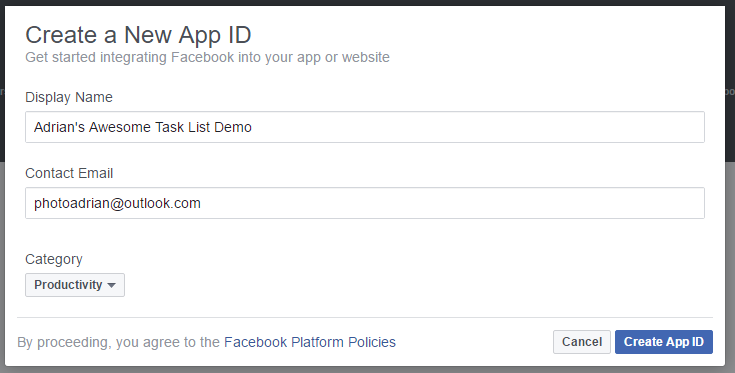

Social Authentication
Social Authentication¶
Azure App Service provides built-in support for Facebook, Google, Microsoft and Twitter. Irrespective of whether you intend to use server-flow or client-flow, you will need to configure the Azure App Service Authentication / Authorization service. The method is pretty similar in each case:
- Obtain a Developer Account for the provider.
- Create a new application, obtaining a Client ID and Secret.
- Turn on Azure App Service Authentication.
- Enter the Client ID and Secret into the specific provider setup.
- Save the configuration.
Before you start any of this, create a new Azure Mobile Apps as we described in Chapter 1. If you want a site to deploy for the configuration, the Backend project in the Chapter2 solution is pre-configured for authorization. You just need to deploy it to Azure App Service.
Facebook Configuration¶
I am going to assume you have a Facebook account already. If you do not have a Facebook account, go to Facebook and sign up. All your friends are likely there already! Now log in to the Facebook Developers web site. Create a new Facebook application:

Note: Facebook updates the look and feel of their developer site on a regular basis. As a result, the screen shots I have provided here may be different. If in doubt, follow the bullet descriptions to find your way.
If you are not already registered, click on the drop-down in the top-right corner and Register as a Developer before continuing.
- Click on the My Apps link in the top right corner of the screen.
- Click on Create a New App.
- Fill in the form:

-
If required, verify your account according to the instructions. This usually involves adding a credit card number or verifying your mobile phone number.
-
Click on the Get Started button next to Facebook Login.

- Enter your application URL +
/.auth/login/facebook/callbackin the Valid OAuth redirect URIs.

- Click on Save Changes.
- Click on the Settings -> Basic in the left hand side-bar.
- Click on the Show button next to the App Secret
Now that you have the App ID and App Secret, you can continue configuration of your app within the Azure Portal.
- Open up your App Service by clicking on All Resources or App Services followed by the name of your app service.
- In the Settings blade, click on Authentication / Authorization which is under Features.
- Turn App Service Authentication to On.
- In the Action to take when request is not authenticated, select Allow Request (no action).
It is very tempting to choose Log in with Facebook. However, you need to avoid this. Selecting this option will mean that all requests need to be authenticated and you will not get the information about the identity on the back end. Selecting Allow Request means your app is in charge of what gets authenticated and what does not require authentication.
- Click on Facebook (which should show Not Configured).
- Cut and Paste the App ID and App Secret into the boxes provided.
- Select public_profile and email for Scopes.
Note that if you request anything but public_profile, user_friends, and email, your app will need further review by Facebook, which will take time. This process is not worth it for test apps like this one.
- Click on OK (at the bottom of the blade) to close the Facebook configuration blade.
- Click on Save (at the top of the blade) to save your Authentication changes.
You can test your authentication process by browsing to https://yoursite.azurewebsites.net/.auth/login/facebook; this is the same endpoint that the Azure Mobile Apps Client SDK calls when it is time to integrate authentication into the mobile client.

If you are not logged in to facebook already, you will be prompted for your facebook credentials first. Finally, here is your happy page - the page that signifies you have done everything right:

Minimal Permissions Every single OAuth provider will ask you what sort of information you want to have access to. These "claims" translate into permissions. The more permissions you request, the less likely the user is going to accept them. Be a good net citizen and only request the information you are actually going to use.
Google Configuration¶
It should be no shock that you need a Google Account to get started. If you do not have one already (or you want a different account for your development activities), create a new account now. Then log in to the Google Developer Portal. Click on the Create Project link at the top:

Enter a nice name (like mine) and click on Create. The screen will show the progress and eventually the project will be listed in the All Projects list. It takes about 30 seconds to create a project. Once you have your Google project, click on it to see all the wonderful things you can add to your project:

There is no "Google Login" that can guide you here. The API you need to add is called Google+ and is listed under the Social APIs. Click on it, then click on Enable at the top of the screen.
Just because it is enabled does not mean you automatically get to use it. Click on Credentials link in the left-hand side bar. You will also see a "Go to Credentials" button at the top of the screen, but it does not take you to the same screen, so do not click it.
On the Crendetials screen, click on the OAuth consent screen tab:

Fill in the form and click on Save. This brings up the next step - creating credentials. Click on the Create Credentials button. This pops up a drop-down menu. You want the OAuth Client ID.
The specific type of client ID you want is a Web Application. The server flow version of the application is a web-based form authentication, which matches the Web Application version of the Client ID.
When you select Web Application, you will get another form:
Enter the URL of your App Service in the Authorized JavaScript origins box, and the URL +
/.auth/login/google/callback into the Authorized redirect URIs box, then click on Create.
Google is one of those providers that requires authentication redirect URIs to be secure - so ensure you use the https version of your URL.
At this point, Google will show you the Client ID and Client Secret for your app. You can also get the Client ID and Client Secret from the interface by clicking on the Credentials link on the left-hand side bar.
The process from here is practically the same as Facebook. Open your App Service within the Azure Portal, click on All Settings, then Authentication / Authorization and finally Google (assuming you have already turned on the authentication service). Cut and paste the Client ID and Client Secret into the boxes provided. Click on OK (at the bottom) followed by Save (at the top of the page).
You can define multiple providers at the same time. The code in the client determines what authentication mechanism gets used.
You can test this just like Facebook. Go to https://yoursite/.auth/login/google with your browser. You should get something like the following:

Confirming here should get us to the same happy screen we achieved with Facebook.
If you happen to mis-type the Authorized redirect URI, Google will tell you that the URI is wrong. I inevitably swap http for https. When this happens, it is an easy fix, but you have to wait a few minutes before the authentication system updates itself.
Microsoft Account Configuration¶
The advantage of the Microsoft Account (or MSA, as it is known) is that you already have an account - you need one for Azure. So this is the first time I am not going to explicitly tell you to sign up for an account.
Your first step is to go to the Microsoft Account Developer Center and log on with your Microsoft account. You should use the same one as you use for Azure, but it is not required.
Just to confuse us, there are two Add an App buttons. Strangely, they are different. Click on the one next to My applications.
Enter an awesome name and click on Create application.

Click on Add Platform, followed by Web. In the Redirect URIs, enter your app URL +
/.auth/login/microsoftaccount/callback. Then click on Save.

Now click on Generate New Password under Application Secrets.

Unlike the other social providers, this is the only time you will get to see your client secret, so make a note of it or cut and paste it into a notepad. Once you have it copied somewhere, click on OK, followed by Save.
You now have all the information you need to configure the Microsoft Account section within your App Server Authentication / Authorization. The Client ID you need to enter is the Application ID and the Client Secret is the password you just copied somewhere.
Note that you have to choose claims that you want to read. The wl.basic and wl.emails will give you enough information to get started with this tutorial.
Click on OK (at the bottom), followed by Save (at the top). You can test the settings by pointing your browser to https://yoursite.azurewebsites.net/.auth/login/microsoftaccount. You will see what should be a normal claims request page:

Clicking on Yes should take you to the normal success page.
Twitter Configuration¶
I hope you are seeing that all the OAuth providers take a very similar route to configuring their service. The semantics of the service are slightly different in each case. Twitter is no different. As you might expect, before continuing, sign up for Twitter. Once you have signed up, the Twitter Developers Portal is your next stop. Once there, you can click on Create New App:

Most of the fields are self-explanatory. The Callback URL is the same thing that the other social providers have
called the Redirect URL. The appropriate value is your app URL + /.auth/login/twitter/callback. There is a legal
agreement at the bottom of the page, then you can click on Create your Twitter application button.
All social authentication providers have some sort of legal agreement that governs their use. In general, demo or PoC apps are fair use. However, you should get a legal opinion before using a social authentication provider in a production app.
Once you have created the app, you will get a tabbed display with all the settings. Click on the Keys and Access Tokens tab:
Note the values for the Consumer Key (API Key) and Consumer Secret (API Secret). They get entered into the Azure Portal.
There is a check box in the Settings tab that says Allow this application to be used to Sign in with Twitter. At the time of writing, this is checked by default. However, if you find you can not log in for some reason, then ensure this checkbox is checked.
Back in the Azure Portal, select your app service, then All Settings, Authentication / Authorization, and finally Twitter (assuming you have already turned Authentication on). You can now cut and paste the Consumer Key and Consumer Secret into the appropriate boxes, before clicking on OK (at the bottom) followed by Save (at the top).
As with the other providers, you should test the authentication flow by pointing your browser to https://yoursite.azurewebsites.net/.auth/login/twitter.
Clicking on Authorize app should show you our normal successful authentication screen.
The social authentication providers should now all be configured to handle a web-based or server-flow authentication request. There are times when configuring a client-flow authentication is different. We will point those out when we get to them.
Adding Authentication to a Mobile Client¶
Now that the backend is completely configured, we can move our attention to the mobile client. We are going to be using the same mobile client that we developed in the first chapter, but we are now going to add authentication to it. Web views are one of those items that are platform dependent. Fortunately for us, Xamarin has already thought of this and provided a facility for running platform specific code called the DependencyService.
If you have already implemented authentication during the Enterprise Authentication section, this code is the same. You just have to alter the provider name.
If we run our application right now, clicking on the "Enter the App" button will result in an error. You will be able to see the Unauthorized error in the debug window of Visual Studio.
Our first step is to define an Abstractions\ILoginProvider.cs interface within the shared project:
using Microsoft.WindowsAzure.MobileServices;
using System.Threading.Tasks;
namespace TaskList.Abstractions
{
public interface ILoginProvider
{
Task LoginAsync(MobileServiceClient client);
}
}
Next, we are going to extend our Abstractions\ICloudService.cs interface so that the main application can call
the login routine:
using System.Threading.Tasks;
namespace TaskList.Abstractions
{
public interface ICloudService
{
ICloudTable<T> GetTable<T>() where T : TableData;
Task LoginAsync();
}
}
Our code will call LoginAsync() in the ICloudService, which will get the platform-specific version of the
login provider and call LoginAsync() there, but with our defined mobile service client. That is defined in the
Services\AzureCloudService.cs class:
using System.Threading.Tasks;
using Microsoft.WindowsAzure.MobileServices;
using TaskList.Abstractions;
using TaskList.Helpers;
using Xamarin.Forms;
namespace TaskList.Services
{
public class AzureCloudService : ICloudService
{
MobileServiceClient client;
public AzureCloudService()
{
client = new MobileServiceClient(Locations.AppServiceUrl);
}
public ICloudTable<T> GetTable<T>() where T : TableData => new AzureCloudTable<T>(client);
public Task LoginAsync()
{
var loginProvider = DependencyService.Get<ILoginProvider>();
return loginProvider.LoginAsync(client);
}
}
}
The method looks up the platform dependent version of the login provider and executes the login method, passing along the client (which we will need later).
In each platform-specific project, we are going to define a concrete implementation of the login provider that uses
a web view to hold the actual authentication flow. Here is the droid Services\DroidLoginProvider.cs (in the
TaskList.Droid project):
using System.Threading.Tasks;
using Android.Content;
using Microsoft.WindowsAzure.MobileServices;
using TaskList.Abstractions;
using TaskList.Droid.Services;
[assembly: Xamarin.Forms.Dependency(typeof(DroidLoginProvider))]
namespace TaskList.Droid.Services
{
public class DroidLoginProvider : ILoginProvider
{
Context context;
public void Init(Context context)
{
this.context = context;
}
public async Task LoginAsync(MobileServiceClient client)
{
await client.LoginAsync(context, "facebook");
}
}
}
Replace "facebook" with "google", "microsoftaccount" or "twitter", depending on your identity provider.
Let us take a closer look at this implementation. The LoginAsync() method on the Azure Mobile Apps client object
takes the Android context (which is normally the main window) and a provider - we can pick any of "facebook",
"google", "microsoftaccount", "twitter" or "aad" depending on what we have defined in the Azure App Service. The
clever piece is the Xamarin.Forms.Dependency call at the top - that registers the class as a platform service
so we can access it through the Xamarin dependency service.
Note that we need an extra initialization routine for Android that must be called prior the login provider being
called to pass along the main window of the app (also known as the context). This is done in the MainActivity.cs
file after the Xamarin Forms initialization call. The dependency service is not set up until after the Xamarin
Forms library is initialized, so we will not be able to get the login provider reference before that point:
protected override void OnCreate(Bundle bundle)
{
base.OnCreate(bundle);
Microsoft.WindowsAzure.MobileServices.CurrentPlatform.Init();
global::Xamarin.Forms.Forms.Init(this, bundle);
((DroidLoginProvider)DependencyService.Get<ILoginProvider>()).Init(this);
LoadApplication(new App());
}
iOS is similar, but does not require the initialization step in the main startup class. The login provider class
is in Services\iOSLoginProvider.cs (in the TaskList.iOS project):
using System.Threading.Tasks;
using Microsoft.WindowsAzure.MobileServices;
using TaskList.Abstractions;
using TaskList.iOS.Services;
using UIKit;
[assembly: Xamarin.Forms.Dependency(typeof(iOSLoginProvider))]
namespace TaskList.iOS.Services
{
public class iOSLoginProvider : ILoginProvider
{
public async Task LoginAsync(MobileServiceClient client)
{
await client.LoginAsync(RootView, "facebook");
}
public UIViewController RootView => UIApplication.SharedApplication.KeyWindow.RootViewController;
}
}
Note that we are using the same pattern here for registering the concrete implementation with the dependency service,
so we can get it the same way. Finally, here is the UWP Services\UWPLoginProvider.cs (in the TaskList.UWP project):
using System.Threading.Tasks;
using Microsoft.WindowsAzure.MobileServices;
using TaskList.Abstractions;
using TaskList.UWP.Services;
[assembly: Xamarin.Forms.Dependency(typeof(UWPLoginProvider))]
namespace TaskList.UWP.Services
{
public class UWPLoginProvider : ILoginProvider
{
public async Task LoginAsync(MobileServiceClient client)
{
await client.LoginAsync("facebook");
}
}
}
Now that we have all the platform-specific login routines registered, we can move on to adding the login routine to
the UI. We have already got a button on the entry page to enter the app. It makes sense to wire up that button so
that it logs us in as well. The Command for the login button is in the ViewModels\EntryPageViewModel.cs:
async Task ExecuteLoginCommand()
{
if (IsBusy)
return;
IsBusy = true;
try
{
var cloudService = ServiceLocator.Instance.Resolve<ICloudService>();
await cloudService.LoginAsync();
Application.Current.MainPage = new NavigationPage(new Pages.TaskList());
}
catch (Exception ex)
{
Debug.WriteLine($"[ExecuteLoginCommand] Error = {ex.Message}");
}
finally
{
IsBusy = false;
}
}
The
ServiceLocatorclass is my basic singleton handler. It is available in the Chapter2 project. It returns the concrete version of the cloud service, just like the Singleton version we defined in Chapter1.
When you run the application, clicking on the "Enter the App" button will now present you with an Authenticate window:
![AAD Authenticate][img58]
Going through the authentication process will get you to the task list again. If the authentication process fails,
then LoginAsync() will throw an error, which is caught at the ViewModel. Right now, the EntryPageViewModel
does nothing more than print a diagnostic message to the debug window of Visual Studio.
Client-Flow for Social Providers¶
In each of the social providers, the identity provider SDK (provided by Facebook, Google, or Twitter) will need to be integrated. In general, these SDKs are provided for a native platform (Objective-C or Swift for iOS, Java for Android), use callbacks or delegates (as is common practice in native libraries) and are thus more complicated to integrate with your mobile client than those that have a C#/.NET SDK delivered on NuGet.
The reward for doing so are a more integrated experience on mobile devices. For example, if you integrate the Google Play Services SDK in an Android app, the app will seamlessly authenticate itself with the connected Google account in the background, avoiding the need for repeatedly authenticating the client. It may ask for a fingerprint instead if the app is not trusted. If you integrate the Facebook SDK, then the app will automatically switch to the Facebook app and ask you to approve the authentication request there instead of authenticating the user through a web view. Both of these provide a more integrated experience for the end user, so this work is well worth pursuing.
As an example, here is the client flow for Facebook. I've implemented this using the Xamarin.Facebook.iOS library,
which can be downloaded and installed into the iOS project from NuGet. The Services\iOSLoginProvider.cs contains
the following:
#region Facebook Client Flow
private TaskCompletionSource<string> fbtcs;
public async Task<string> LoginFacebookAsync()
{
fbtcs = new TaskCompletionSource<string>();
var loginManager = new LoginManager();
loginManager.LogInWithReadPermissions(new[] { "public_profile" }, RootView, LoginTokenHandler);
return await fbtcs.Task;
}
private void LoginTokenHandler(LoginManagerLoginResult loginResult, NSError error)
{
if (loginResult.Token != null)
{
fbtcs.TrySetResult(loginResult.Token.TokenString);
}
else
{
fbtcs.TrySetException(new Exception("Facebook Client Flow Login Failed"));
}
}
#endregion
Note the use of a TaskCompletionSource<>() here. This is used often to convert callback APIs into awaitable APIs.
We set off the async call with the callback, then await on the completion (which is signified by the
TaskCompletionSource). When the callback is called, it sets the value of the TaskCompletionSource (or causes
an exception) and that causes the task to complete.
The LoginAsync() method can now be updated like this:
public async Task LoginAsync(MobileServiceClient client)
{
var accessToken = await LoginFacebookAsync();
var zumoPayload = new JObject();
zumoPayload["access_token"] = accessToken;
await client.LoginAsync("facebook", zumoPayload);
}
public UIViewController RootView => UIApplication.SharedApplication.KeyWindow.RootViewController;
With this version, clicking on the login button will seamlessly switch into the Facebook application and ask the user to confirm the request, before switching back authenticated.